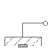

Mounting1DPropagate 1-dim. support torque to 3-dim. system (provided world.driveTrainMechanics3D=true) |

|
Diagram
{kind=link}
Information
This information is part of the Modelica Standard Library maintained by the Modelica Association.
This component is used to acquire support torques from a 1-dim.-rotational mechanical system (e.g., components from Modelica.Mechanics.Rotational) and to propagate them to a carrier body.
The 1-dim. support torque at flange_b is transformed into 3-dim. space under
consideration of the rotation axis, parameter n, which has to be given in the
local coordinate system of frame_a.
All components of a 1-dim.-rotational mechanical system that are connected to a common
Mounting1D element need to have the same axis of rotation
along parameter vector n. This means that, e.g., bevel
gears where the axis of rotation of flange_a and
flange_b are different cannot be described properly by
connecting to the Mounting1D component. In this case, a combination of several
Mounting1D components or the component BevelGear1D should be used.
Reference
Schweiger, Christian ;
Otter, Martin:
Modelling
3D Mechanical Effects of 1-dim. Powertrains. In: Proceedings of the 3rd International
Modelica Conference. Linköping : The Modelica Association and Linköping University,
November 3-4, 2003, pp. 149-158
Parameters (2)
Connectors (2)
Components (2)
Used in Examples (5)
|
Modelica.Mechanics.MultiBody.Examples.Loops Mechanism with three planar kinematic loops and one degree-of-freedom with analytic loop handling (with JointRRR joints) |
|
|
Modelica.Mechanics.MultiBody.Examples.Rotational3DEffects Demonstrates usage of models Rotor1D and Mounting1D |
|
|
Modelica.Mechanics.MultiBody.Examples.Rotational3DEffects Demonstrates usage of model Rotor1D mounted on a moving body |
|
|
Modelica.Mechanics.MultiBody.Examples.Rotational3DEffects Demonstrate usage of GearConstraint model |
|
|
Modelica.Mechanics.MultiBody.Examples.Rotational3DEffects Demonstrates the usage of a BevelGear1D model and how to calculate the power of such an element |
Used in Components (1)
|
Modelica.Mechanics.MultiBody.Joints Joint (no mass, no inertia) that describes an ideal rolling wheel set (two ideal rolling wheels connected together by an axis) |